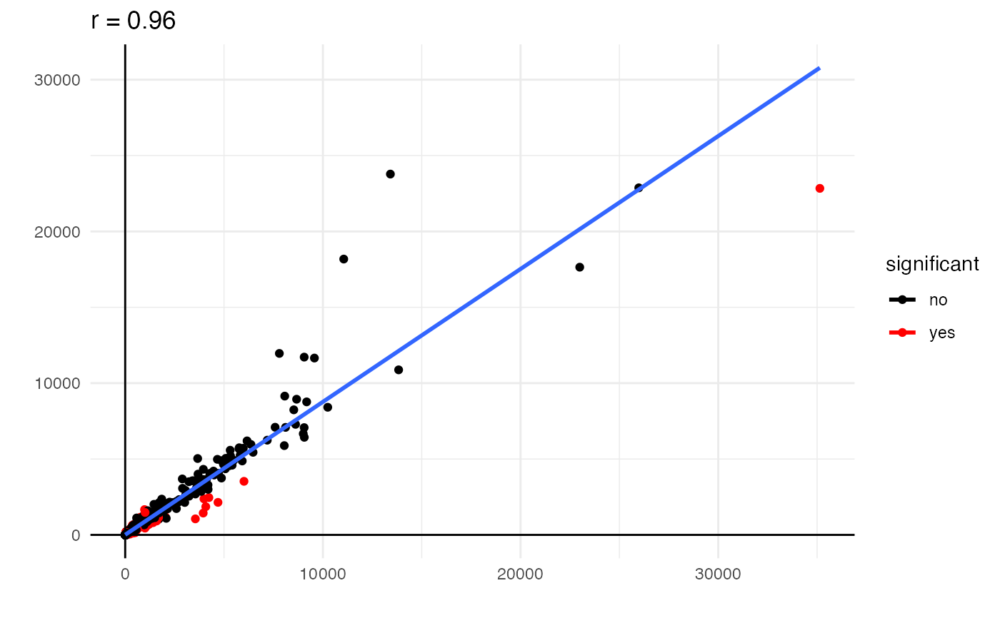
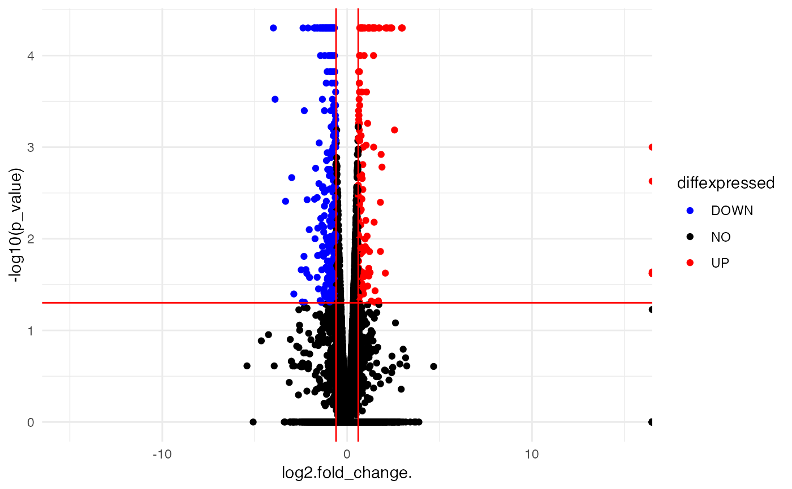
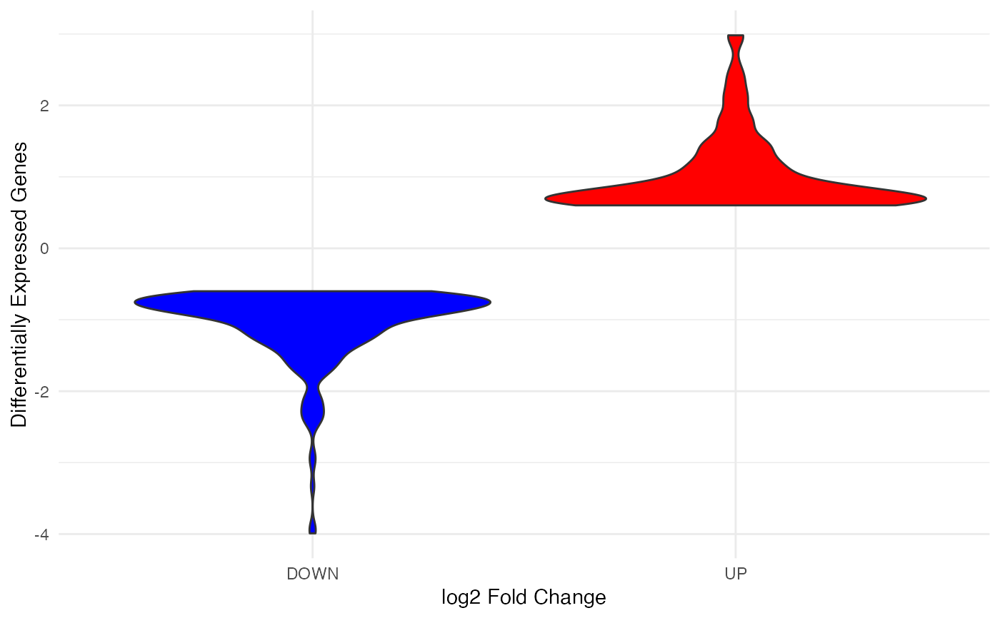

Takes expression levels of genes found in genomic data sets, and plots them as either a scatter plot, a volcano plot, or a violin plot. While both volcano and violin plots require only the gene names, log2 values, and p values, the scatter plot requires the expression values from the controls, the experiments, and the column stating whether they are significant.
genomic_plot( plot.type = c("scatter", "volcano", "violin"), interact = TRUE, data, gene.n, c.val, e.val, log2, pval, sig )
| plot.type | can be either "scatter", "volcano", or " violin". |
|---|---|
| interact | if TRUE, the function returns an interactive plotly graph for either scatter or volcano plot. if FALSE, the function returns a static plot. |
| data | data set of genomic data |
| gene.n | column name in data set with gene names (character). |
| c.val | column name in data set with expression levels in control (numeric). |
| e.val | column name in data set with expression levels in experiment (numeric). |
| log2 | column name in data set with calculated log2 values (numeric). |
| pval | column name in data set with calculated p-values (numeric). |
| sig | column name in data set that states changes were significant (character). |
Returns a ggplot defined as a variable named s (scatter plot), vol (volcano plot), or vio (violin plot).
genomic_plot(plot.type = "scatter", interact = FALSE, data = gendata, gene.n = "gene" ,c.val = "value_1", e.val = "value_2",sig = "significant")#> What is the title of the x-axis? #> What is the title of the y-axis?#>genomic_plot(plot.type = "volcano", data = gendata, interact = FALSE, gene.n = "gene", log2 = "log2.fold_change.", pval = "p_value")genomic_plot(plot.type = "violin", data = gendata, interact=FALSE, gene.n = "gene", log2 = "log2.fold_change.", pval = "p_value")#> Warning: Removed 6 rows containing non-finite values (stat_ydensity).